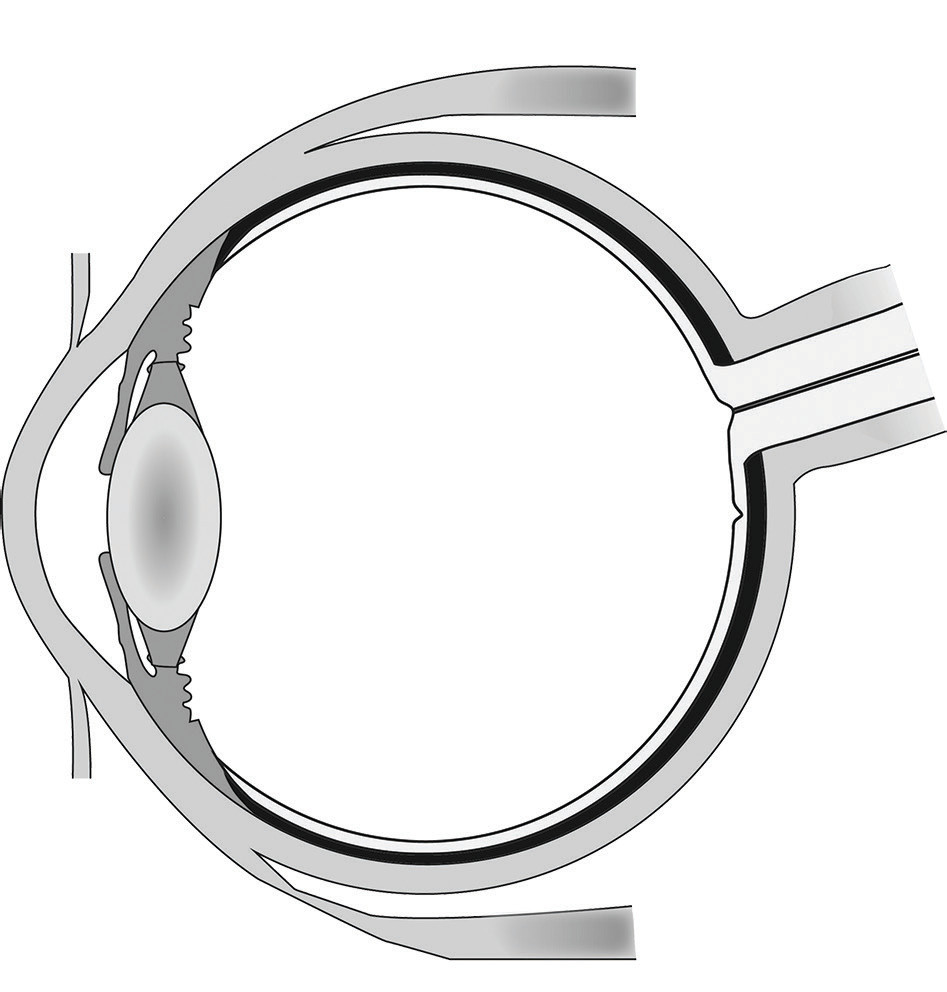
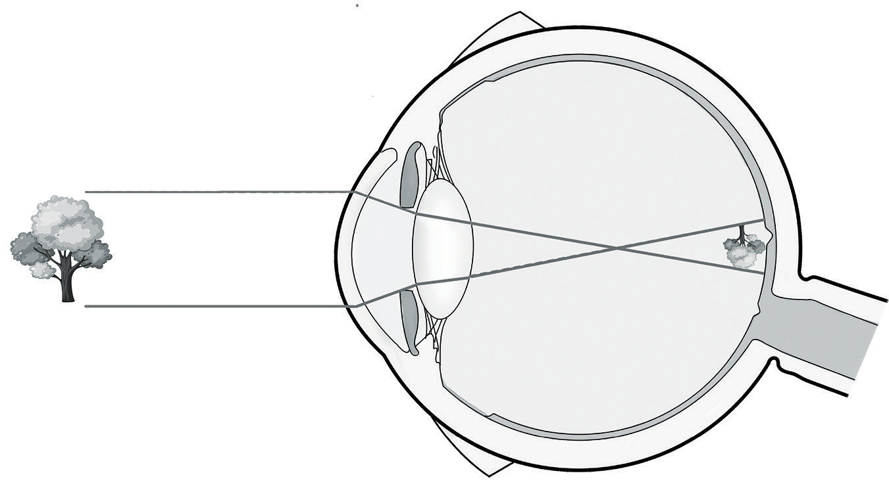

Images formed by the human eye
When light strikes the eye, it passes through the cornea. The cornea is shaped like a dome, so it bends the light to help the eye focus. The light through the cornea and the aqueous humour enters the eye through the pupil. The iris controls the size of the pupil, which in turn determines the amount of light that enters the eye. Next, light passes through the lens. The lens works together with the cornea to focus light correctly on the retina. Light from the lens travels through the vitreous humor towards the retina. The image is formed on the retina as illustrated in Figure 6.19. When light hits the retina to form the image, the photoreceptors on the retina turn the light into electrical signals, which travel to the brain through the optic nerve.
The indices of refraction of both the aqueous humour and the vitreous humour are about 1.336, which is nearly equal to that of water. The crystalline lens, while not homogeneous, has an average index of refraction of 1.437. This is not very different from the indices of the aqueous and vitreous humour. As a result, most of the refraction of light entering the eye occurs at the outer surface of the cornea, as shown in Figure 6.19.
